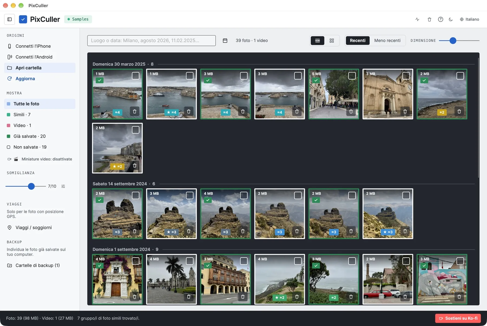
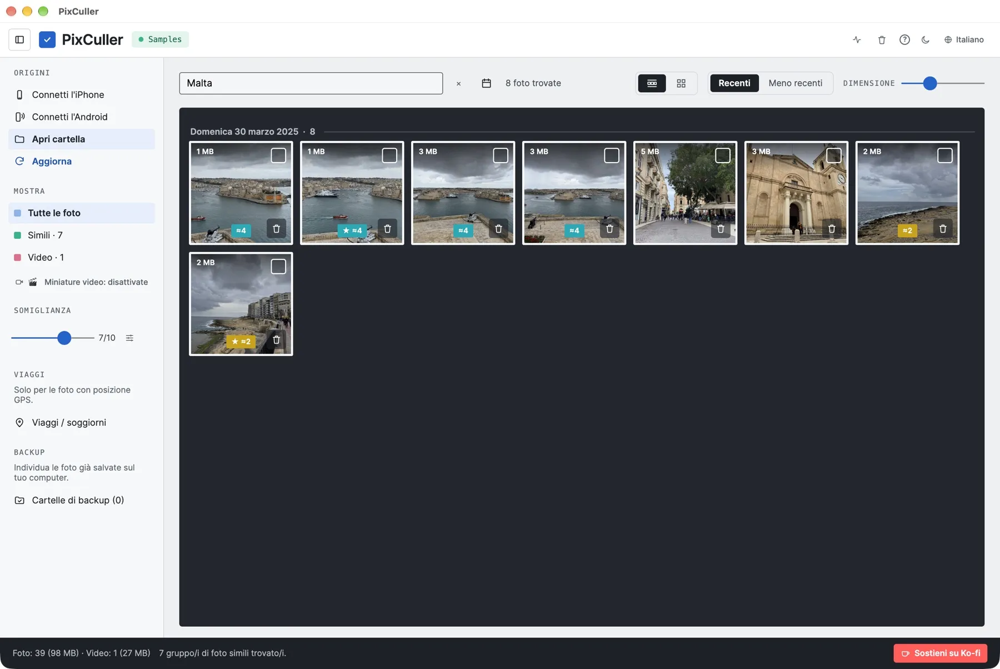

Ordina il tuo iPhone dal Mac o dal PC.
Collega il cavo. PixCuller trova doppioni e raffiche, mostra le foto simili affiancate e ti lascia eliminare centinaia di foto in pochi clic. Funziona anche con Android.
Gratis · Nessun account · Le tue foto non lasciano mai il tuo computer

Come funziona
Collega
Collega l'iPhone o il telefono Android con un cavo USB. Niente da installare sul telefono, niente cloud, nessun account.
Confronta
Foto simili, doppioni e raffiche vengono individuati per te. Mostrane fino a sei affiancate e tieni la migliore.
Elimina
Segna ciò che non vuoi più ed elimina centinaia di foto in un colpo solo, direttamente sul telefono.
Uno sguardo all'app




Perché PixCuller
Un errore si rimedia
Per impostazione predefinita, ogni foto eliminata resta 30 giorni in una cartella del tuo computer: puoi reimportarla.
Niente lascia il tuo computer
Nessuna foto né posizione GPS viene inviata altrove. Nessun account, nessun cloud.
Pensato per la velocità
Spunta, trascina, Ctrl/⌘+clic: seleziona centinaia di foto con pochi gesti.
Già salvata? Lo vedi subito
Aggiungi le tue cartelle di backup: le foto che hanno già una copia identica sul computer hanno una cornice verde, così sai cosa si può eliminare senza rischi.
Cerca per luogo o per data
«Milano», «agosto 2026», «11.02.2025»: scrivilo e ritrovi le foto, offline, grazie al GPS. Un pulsante calendario filtra per periodo.
Giorno per giorno
La griglia mostra una linea e una data per ogni giorno, oppure resta compatta con la data al passaggio del mouse e lungo la barra di scorrimento.
Gratis, davvero
Nessun abbonamento, nessun acquisto in-app, nessun account.
PixCuller
0 $
Sfoglia, confronta, ordina ed elimina, su un iPhone, un telefono Android o una cartella. Mac e Windows.
PixCuller funziona da solo: nessun'altra app da acquistare o installare.
Elimina dal computer
iPhone: basta un cavo USB. Le foto vengono eliminate direttamente sull'iPhone, senza passare da «Eliminati di recente». Serve un PC Windows 10/11 o un Mac con macOS 27 o successivo, con Foto di iCloud disattivato sull'iPhone.
Android: stesso principio, senza nulla da installare sul telefono. PC Windows 10/11 o Mac con macOS 27 o successivo.
Rete di sicurezza: per impostazione predefinita PixCuller conserva per 30 giorni una copia di ogni foto eliminata in «PixCuller Trash» (cartella Immagini). In una cartella del computer, i file vanno nel Cestino.
Inoltre: le tue foto raggruppate per soggiorno, con lo spazio occupato da ciascuno.
Guide per ordinare le tue foto dal computer
Come ordinare le foto dell'iPhone sul Mac
Ordina migliaia di foto dell'iPhone sul Mac: cosa fanno Foto e Acquisizione Immagine, e un metodo più rapido per raggruppare, confrontare ed eliminare.
Come ordinare le foto dell'iPhone su un PC Windows
Ordina migliaia di foto dell'iPhone su Windows 10 o 11: cosa mostrano l'app Foto ed Esplora file, e un metodo più rapido per ordinare ed eliminare.
Come ordinare migliaia di foto più in fretta su Mac o PC
Perché ordinare le foto su un grande schermo è molto più veloce che sul telefono, e un metodo semplice per esaminare migliaia di foto in una sola sessione.
Come liberare spazio su iPhone da un Mac o PC Windows
Collega il tuo iPhone, ordina le foto su un grande schermo ed elimina ciò che non ti serve, senza iCloud e senza inviare nulla online.
Come confrontare foto simili e tenere la migliore
Una routine semplice per scegliere lo scatto migliore tra foto quasi identiche: cosa guardare e come farlo in fretta su un grande schermo.
Come trovare foto duplicate e simili sul Mac
Trova copie esatte, raffiche e scatti quasi identici nelle cartelle di foto del Mac o su un disco esterno, tieni il migliore e sposta il resto nel Cestino.
Come trovare foto duplicate e simili su Windows 10 o 11
Trova copie esatte, raffiche e scatti quasi identici nelle cartelle di foto del PC o su un disco esterno, tieni il migliore e sposta il resto nel Cestino.
Come ordinare una grande cartella di foto, o un intero disco esterno
Vecchi backup, schede SD, un disco esterno pieno di foto: un metodo semplice per ordinare migliaia di file per viaggio ed eliminare le quasi copie.
Come ordinare le foto del tuo Android sul Mac
Da sempre un Mac fatica a leggere i telefoni Android via USB. Come ordinare migliaia di foto Android su un Mac con macOS 27 ed eliminare ciò che non serve.
Come ordinare le foto del tuo Android su un PC Windows
Ordina migliaia di foto Android su Windows 10 o 11: cosa mostrano Esplora file e l'app Foto, e un metodo più rapido per raggruppare, confrontare ed eliminare.
Come liberare spazio sul tuo telefono Android da un Mac o PC
Collega il tuo telefono Android via USB, ordina le foto su un grande schermo ed elimina ciò che non serve, senza Google One e senza caricare nulla online.